EF.LLMEval Design Document
Audience: Engineers adding, extending or operating a model-and-prompt evaluation harness Scope:
EF.LLMEval,EF.LLMEval.FlowEngineLast updated: 2026-09
This document explains what the package is, how the pieces fit together and why each mechanism is shaped the way it is. It does not restate the API surface: every type, option and default is documented in EF.LLMEval/README.md, and this document links there rather than duplicating it.
For a step-by-step build, see LLMEval-INTEGRATION-GUIDE.md. For budgets, secrets and day-to-day running, see LLMEval-Operations.md.
Table of Contents
At a glance
- What LLMEval does for each workload
- How an eval run is judged, and what it costs
- How an evaluation proceeds, step by step - the walk from an empty solution to a report
- Capabilities and candidate filtering - what decides which candidates are in the field
- Settings as candidates, and narrowing the field - when the cheapest configuration is not a different model
- Selection without an incumbent - ranking a field when nothing ships yet
- Hints, proposals and the rerun loop - what to do with a report full of failures
- Adopting the package - what has to be true of an application before a harness is built
- Appendix: sample outputs - what an engineer actually reads after a run
The document
- Why the package exists
- Architecture overview
- Core concepts
- The sweep lifecycle
- Evaluators and judges
- The selection rule
- Throttle and continue
- The judge exchange
- Storage layout and caches
- The prompt-development loop
- Design boundaries
Adopting the package
This document explains why each mechanism is shaped the way it is.
What has to be true of an application before any of it applies - the
EF.AI registration that provides the composition seam, request settings
in the agent's Defaults block rather than at the call site,
the package feed and its credential, the Azure sign-in, what the judge
costs, the samples rule and the logger the runner reports through - is
the Before you start list in EF.LLMEval/README.md,
with the same list and the procedure around it in LLMEval-INTEGRATION-GUIDE.md.
The seam itself is section 3.5
below.
Every term of art used here has a one-line definition in the README glossary; this document does not restate it.
What LLMEval does for each workload
The sections numbered below explain the machinery. This table is the short answer: find the shape of your workload on the left, and read across to what a sweep produces and what it is worth.
"Optimal" here never means "cheapest that passes". The selection rule reports two answers, and which one to take is a judgement the report supports rather than makes: the parity pick is the cheapest candidate judged as good as the incumbent, and the upgrade pick is a clearly better candidate whose cost per pass is within a bounded multiple of it. See section 6.
| Workload shape | What LLMEval runs | Output | Benefit |
|---|---|---|---|
| A single prompt or synthesis call. One request, one answer. An interpretation prompt that turns a structured record into prose. | A scenario sweep over the roster: the application's own code per candidate, hard gates for correctness, judged quality pairwise against the incumbent. | The optimal model for that prompt: a parity pick and an upgrade pick, each with cost per pass, win rate and its interval. | Lower runtime model cost at the same measured quality, or better output at a cost delta you can see before committing to it. |
| A multi-agent loop with no human. Two or more models handing work to each other until a condition is met. | An episode sweep with a role assignment per agent, varying one role at a time rather than taking a cross product. | The optimal model per role, with per-role cost broken out alongside the total. | Lower runtime cost per session. The split is the point: an acceptable total is often mostly one role that a cheaper model would run just as well. |
| A multi-agent loop with a human in the loop. The same, with a person replying in the middle. | The same episode sweep, with a scripted human (the default, free and identical every run) or a model-played persona priced under its own role. | Per-role picks plus turn and completion metrics: turns to completion, and whether the episode completed, hit its turn cap or was stopped. | The same cost benefit, plus reliability: a model that answers well but takes two extra turns, or fails to converge at all, is visible as such rather than as a good answer. |
| An EF.FlowEngine workflow. Agent nodes, human tasks, branches. | The FlowEngine adapter runs the real workflow with each agent node's client swapped for the cell's recording client, answering human tasks from the simulated human. | Per-node model picks, with the node history as the transcript and the workflow output as the scored artifact. | Lower runtime cost per execution, measured on the workflow that actually ships rather than on a re-implementation of it. |
| Prompt variant development. The model is settled; the wording is not. | The same sweep across prompt variants, with the shipped prompts as the control, plus deterministic adjustment hints and opt-in proposals. | The variant that passes more often, or costs less at parity quality, with its own selection group per variant. | Better prompts before they ship, decided on measurement rather than on a reading of two outputs. |
| A routing or provider decision. Same model, different route. | The same models run across connections: direct, gateway or aggregator, and region. | Cost and latency per route, with the upstream that actually answered recorded per cell. | The cheapest route at parity, and early warning when a route quietly serves something other than what it advertises. |
Every row is the same sweep with a different shape of workload, which is why the rest of this document describes one pipeline rather than six.
How an eval run is judged, and what it costs
An eval run has two cost centres, and only one of them is money. The candidate calls are the thing being measured and are billed to the account running the sweep; the judge is the thing that would dominate that bill, which is why it is not on it.

One way to run
| What it is | |
|---|---|
| Candidate roles | API connections, billed per token |
| Judge | The Claude Code harness subagent, answering through the file exchange |
| Simulated human | The same subagent, through the same exchange, unless a model is cast for the role |
| What is billed | Candidate calls only |
| Judge cost reported as | Outside the eval's spend, charged to the harness subscription, never zero and never free, with the judge-answer count printed beside the spend line |
| Runs unattended | No: it needs the harness session and a live drainer heartbeat |
| Reproducible judge | Only in the sense that the reply files are kept |
There is no second mode and no API judge to select. A sweep is run from a Claude Code session with a subagent draining the exchange, and a run started without one fails fast rather than quietly finding something to bill.
Why the judge dominates
The judge answers for every cell of the matrix, and each of its calls is expensive in input tokens because of what it has to carry:
- Two pairwise calls per non-incumbent cell. Each carries the original request, both responses and the rubric, and the pair is the same comparison run in both orders so position bias cancels. See section 5.3.
- Plus one rubric-score call per cell when an absolute rubric score is attached, carrying one response and the rubric. In the usual configuration that is three judge calls per candidate cell.
- A judge that reasons costs more of the drainer's attention, not more money. Nothing here caps the judge's output: it is a subagent writing a file, not a metered completion that a cap protects.
A candidate cell, by contrast, is one request and one answer at that model's own price.
A worked cost shape
Neutral numbers, for a sweep of 120 candidate cells (say four candidates over five fixtures, three variants, two repeats) with an incumbent and a rubric score attached:
| Line | What it costs |
|---|---|
| Candidate calls, 120 cells on mid-priced models | A few tens of cents |
| Judge calls, roughly 270 of them (two pairwise on each of the 90 non-incumbent cells, plus one rubric score on all 120) | Several dollars with a mid-priced API judge, tens of dollars with a frontier reasoning one - which is why there is no API judge here. Outside the eval's spend, and charged to the harness subscription as about 270 answers of its allowance |
| What the report says | Judge: Claude Code harness subagent (outside the eval's spend, charged to the harness subscription).,
and beside the spend line
Judge answers: 270 through the Claude Code exchange, outside the spend above, charged to the harness subscription. |
The ratio, not the absolute figures, is the point: on a matrix of any size a paid judge would be an order of magnitude more than the field it is judging, and it is the one part of the run that scales with every dimension at once. Two consequences follow. First, the spend ceiling gates the candidates and only them, because judging is not money - which is not the same as free, and the judge-answer count beside the spend line is what a reader sizes the other cost by; do not size a matrix as though either were unlimited. Second, before widening a matrix, widen it in the dimension that adds judged evidence (fixtures) rather than the one that multiplies judging without pooling it (variants) - the drainer's time is finite too.
What the judge needs from you
The one requirement is that somebody is draining. A run started with
no drainer online, or with a heartbeat past the staleness bound,
fails fast with
No judge agent is draining {root} rather than hanging on
its first cell, and nothing re-points the judge at a paid endpoint to
keep going: that would put a bill on somebody who never asked for one.
Section 8 covers the exchange
protocol itself.
To see what a finished run actually looks like, skip to Appendix: sample outputs. It is placed at the end rather than here so this orientation stays short, and it is worth reading before the numbered sections if you have never seen a leaderboard from this harness.
How an evaluation proceeds, step by step
The two sections above say what a sweep is for and what it costs. This one is the walk from an empty solution to a report, in the order the work actually happens. Each step links to the numbered section that explains the mechanism behind it.

1. Install the package and wire an eval host onto the real
composition root. A project reference to
EF.LLMEval installs the three agent skills into
<repository root>/.claude/skills on build, so the
instructions for building a harness, for running the broad round and for
running a focused round are present without a separate step. The wiring
itself is one type: an eval host that calls the application's
own registration entry point (the
AddXxxServices(configuration) the production host calls,
not a hand-built object graph) and then replaces only the chat clients
with the cell's candidates. Storage, clocks, identity and outbound
integrations get per-cell doubles in the same place, because a cell
reaching the real database measures that database's availability
alongside the model. See section
3.5.
2. Inventory every LLM call point in the workflow, with what each one requires. Written down before any harness code exists, one row per workload. What a row has to record is what a cell will have to satisfy:
| Requirement | Why the harness needs it |
|---|---|
| Plain text or structured output | A schema-bound call is checked against strict structured-output support and the schema is dropped for a model without it; a plain-text call is untouched. |
| Tool calling | A call that offers tools is checked against tool support and the tools are dropped for a model without it, and the tools have to be resolvable inside a cell. |
| Web search or other retrieval | Not inferred from a probed request. A role declares it with
RoleRequirements.WebSearch. See Capabilities and candidate
filtering. |
| Context size | Not measured from the probed prompt. A role declares the window it
needs with RoleRequirements.MinContextTokens. |
| Human turns | Decides whether the workload is a single-shot scenario or an episode, and which simulated human answers the middle turns. |
| Storage and ambient context it reaches | Each needs a per-cell double in the host, or the cell measures something other than the model. |
Half an inventory measures the workload somebody remembered. The call point that costs the most is routinely the one nobody listed.
3. Build the matrix. The dimensions are fixture x prompt variant x candidate model, and for a multi-agent loop x role assignment. Every combination is one cell: one run of the real workload, scored on its own. A role assignment is a named cast rather than a cross product over the roles - varying one role at a time is what makes a per-role pick readable, and a full cross product over three roles and four candidates is sixty-four casts nobody will read. See section 3.4.
4. Probe. Each (workload, variant) runs once against a client that sends nothing and records what the application's code actually asked for: the messages, the response format, the tools, the reasoning effort, the token ceiling, and how many calls each role made. Everything downstream is computed from that rather than from an assumption. See section 4.
5. Annotate on capability, per candidate, per cell.
The candidate's declared capabilities are checked against the probed
ChatOptions. A member the candidate cannot satisfy is
removed from the request before the call and listed on the cell's
record; the cell runs, is priced and is ranked like any other. For an
episode this happens per role. Nothing here excludes a candidate:
capabilities are annotations, not gates, because a catalog entry is a
claim about a model and the run is the evidence about it.
6. Estimate and check the ceiling. The whole matrix is priced from the probe and the catalog before anything is sent, judge calls included, and the run is refused against the ceiling with a breakdown naming which dimension to cut. The estimate is an upper bound over every cell, and every cell is in it: nothing is excluded before the run, so the priced matrix is the matrix that actually runs. Actual spend comes in under it because the bound is generous, not because cells vanished.
7. Run every remaining cell. The real workflow executes, with each role's client swapped for that cell's candidate, under a concurrency cap and a per-minute pacer. The delegates call the application's own classes, so what is measured is the orchestration that ships.
8. Capture per cell. Latency, input and output
tokens, cost priced from the live catalog, the hard-gate outcome from
the deterministic evaluators, and judged quality - pairwise against the
incumbent's answer to the same request, in both orders. Everything the
sweep measured is recorded per cell, including n/a where
there was nothing to measure. See section 5.
9. Read the report. Three things, in the order they are useful: the leaderboard, one table per (workload, variant) ranked by cost per passing generation; the Selection block, a parity pick and an upgrade pick per group, per role for an episode, with the rule and its thresholds stated above the picks; and suggested adjustments, the prompting notes and deterministic hints for whatever failed. See section 6 and Hints, proposals and the rerun loop.
A second run of the same sweep replays every finished cell from the response cache at no model cost, which is what makes step 9 the start of a loop rather than the end of the work.
Capabilities and candidate filtering
Step 5 of the walk above is one method call, and it decides which candidates are in the field. It is worth knowing exactly what it reads, because a gap in it looks like a model that is fine and is not.
What is modelled today
ModelCapabilities is a small record with five fields,
and nothing else about a model is read:
| Field | What it decides is removed from a request |
|---|---|
SupportsJsonSchema |
A request carrying a JSON schema (strict structured outputs). |
SupportsJsonMode |
A request asking for a JSON response format with no schema. A model with schema support satisfies this too. |
SupportsTools |
A request that offers any tools. One boolean for tool calling as a whole. |
ReasoningEfforts |
The efforts the model accepts. A requested effort outside the list
is removed. An empty published list means no effort is known to be
accepted, so a requested one is removed too - stricter than
Supports, which skips an empty list because it used to
refuse the model rather than edit the request. |
ReasoningMandatory |
A model that always reasons. The requested effort is removed and the note says the model reasons on every call, rather than that it cannot do what was asked. |
Two further fields are carried but are not read when trimming a
request, because nothing in a probed ChatOptions measures
itself against them: SupportsWebSearch (a hosted web-search
tool, null when no catalog said) and
ContextTokens (the published context window,
null when none is published). Both are read by the per-role
requirements below.
ModelCapabilities.Unknown
(IsKnown == false) is the sixth state and the most
important one: it is deliberately permissive, so a
candidate no catalog placed still runs and lets the provider be the
judge. Refusing to call a model over a gap in catalog data would
silently shrink the field, which is the opposite of what the harness is
for.
Where they come from
Two sources, and a roster override.
- A catalog, per wire model id. The live aggregator
catalog maps the provider's own
supported_parameterslist onto the record:structured_outputstoSupportsJsonSchema,response_formattoSupportsJsonMode,toolstoSupportsTools, and the published reasoning efforts (plus a mandatory flag) onto the last two. A retail price catalog that publishes prices and no capability data yieldsUnknownfor every entry, which is the permissive state above rather than a blocked field. - A static catalog, for anything the live one does not carry: a gateway alias, a deployment name, a model behind a first-party endpoint that publishes no machine-readable capability list.
- A roster override.
ModelUnderTest.Reasoningis declared on the candidate rather than derived, and answers "does this model reason on every call" for an entry that was never enriched.ModelUnderTest.Familyis the same shape of declaration for the vendor family.
Pricing travels the same path and has the same unknown state, with the same rule: an unknown price is never treated as zero.
How the runner decides to remove a setting
Supports(ChatOptions, out reason) is called with the
probed options - what the application's own code asked
for on this workload and this variant, not what a harness author
assumed. It returns false on the first check that fails and writes a
reason in plain words:
model does not support strict JSON schema (structured outputs),
model does not support tool calling,
model does not support reasoning effort 'high' (supports: none, low, medium),
or
model requires reasoning and cannot run at effort 'none'.
A false result does not exclude the model, and there
is no setting that makes it. Capabilities are annotations, not gates: a
catalog entry is a claim about a model and the run is the evidence, so
the runner wraps the cell's client, removes the refused members - the
reasoning effort, the response format, the tool definitions - before the
request is sent, runs the cell normally, and lists what went on
EvalRunRecord.DroppedOptions, which the Notes column prints
and a N cells ran with a request setting dropped line
counts. The removal is decided from catalog data before the call; a
provider that refuses a parameter at call time is a failed cell with no
re-send and no after-the-fact strip.
EvalOutcome.Unsupported is no longer produced by anything
and is kept only so an older results file still reads back. For an
episode the same check runs once per role, and each role's request is
trimmed on its own capabilities: one role refusing a member never
invalidates the cell or stops the other roles being called, and every
removal is listed on the cell's record.
Per-role requirements, reported and never enforced
A role may state what any model assigned to it must be able to do,
independently of what one cell's probe happens to ask for.
RoleRequirements(Tools, StructuredOutput, WebSearch, Reasoning, MinContextTokens)
is declared on EvalRoleBinding.Requirements (carried onto
EvalEpisode.RoleRequirements by
EvalHost.Episode, and settable directly on an episode
written in code). Every flag defaults to off, so a role that declares
nothing records nothing.
SweepRunner.RunEpisodesAsync evaluates them once per
assignment and role and reports the result: every cell
runs, is priced and is scored exactly as it would be with no
declaration, and what the cast leaves unmet is written to
EvalRunRecord.UnmetRequirements as
role: requirement (unknown|absent), shown per row in the
Notes column and counted by a
N cells ran with a declared role requirement unmet line.
Nothing is excluded and nothing is repriced, because excluding the
candidate a requirement doubts would destroy the only evidence about
whether the doubt was right.
A capability no catalog published reports as (unknown)
rather than (absent), because a gap in this library's data
is not a finding about the model and sends a reader to check the wrong
thing.
How it appears in the report
summary.mdheader: two counts,N cells ran with a request setting droppedandN cells ran with a declared role requirement unmet, above the per-scenario tables.- The leaderboard row: the model is ranked on its
real result, with
ran without: ...andrequirement unmet: ...in the Notes column, so a row answering a slightly different request is never read as though it answered the same one. - Ranking and picks: a cell with a dropped setting or an unmet requirement is an ordinary succeeded cell and feeds cost per pass, the means and the selection like any other. The Notes are what a reader weighs; nothing is withheld from the ranking on the strength of catalog data.
results.json: the per-cell record carriesDroppedOptionsandUnmetRequirementsverbatim, so a re-read of a finished run can tell a trimmed request from an untouched one.
What is not modelled today
Stated so it is not discovered mid-run:
- Web search when trimming a request.
SupportsToolsis still one boolean there, so a hosted web-search, retrieval or code-interpreter tool is not distinguished from an ordinary function tool bySupports(ChatOptions). A role that needs hosted search says so withRoleRequirements.WebSearch, which readsSupportsWebSearch; there is no way to infer it from a probed request. - Prompt length against the context window.
MinContextTokenscompares a role's declared need with the published window; nothing measures a probed prompt's own length and compares that. - Maximum output tokens. A catalog entry carries it
where the provider publishes it, but it is not copied into
ModelCapabilitiesand nothing is checked against it. - Modality. Image, audio or file input is not represented at all.
- Requirements in the summary. A refused cell carries its reason, but the summary does not print a standing list of what each role required alongside which candidates met it.
Follow-ups
- Print the role requirements in the summary, so a report states what each role needed and which candidates met it, rather than only naming the ones that did not.
- Hosted-tool capabilities beyond web search, so retrieval and code interpreters stop being folded into the single tool-calling boolean read when a request is trimmed.
Settings as candidates, and narrowing the field
Everything above treats a candidate as a model. That is wrong often enough to matter: the same wire model at reasoning effort low and at high has two prices, two latencies and often two quality levels, so the cheapest configuration that does the work is sometimes a setting rather than a model, and a roster that can only name models cannot see the difference. A run that reports "model A is 3x cheaper than model B" when model B at low effort would have done the job has measured the wrong axis.
An entry, not an annotation
ModelUnderTest.RequestSettings carries what this entry
sends on top of the application's request - a reasoning effort, a
temperature, a top-p and an output cap - and BaseModelId
names the entry it varies. There is deliberately no bag for a
provider-specific field: the Microsoft.Extensions.AI OpenAI-wire clients
drop ChatOptions.AdditionalProperties on both routes, so
such an entry would be a candidate with its own id, price and cells that
sends exactly what its base sends, which is the shape of silent failure
this package exists to refuse. A field the wire clients do not carry has
to be evaluated through a route that does. Such an entry is a
candidate in its own right: its own id
(<base id>@<label>), its own cells, its own
price line, its own point on the chart, its own row in the tables,
grouped under its base model in the roster table with a Settings column
saying what it sends.
The alternative - a single entry with a list of settings, folded together in the report - was rejected for the reason the whole package exists: a number that pools two different requests is not a measurement of either. Making the setting an entry costs one line in the roster and makes every existing mechanism work on it unchanged: selection, the pairwise comparison, round seeding, tag-based field selection, the ceiling and the estimate.
Where the settings go on, and what is recorded
Per cell, top to bottom: recorder, the entry's settings, the application's own configured request defaults for that role, the capability stripper, the client.
- The entry wins over the application where the two
disagree. An entry that could not override the application would not be
a candidate at all. Each disagreement is recorded on the cell as
setting overridden: ReasoningEffort app=Low entry=High, inEvalRunRecord.SettingOverrides, and printed in the leaderboard's Notes column: a reader comparing a variant's row with its base's has to know which members differed and from what. - The stripper still strips. A variant asking for an
effort its model does not publish is measured without the effort and
says so in
DroppedOptions, rather than losing the cell to a parameter rejection. This is also the reading for a variant and its base sitting at identical cost and win rate: the setting never reached the provider, which is a different finding from a setting that made no difference. - The recorder is above both, so
ChatCall.Optionskeeps saying what the application asked for. The three facts - what the application built, what the entry changed, what the model refused - are separately recorded because a reader needs all three to interpret the score.
Three things a variant shares with its base, because they are facts
about the model rather than about the request: its client, its
rate-limit bucket and its price. A provider meters an account per model,
so a second client for a second effort would put two pacers on one cap;
EvalChatClientProvider therefore resolves a variant to its
base's registration and refuses a variant whose base is absent or whose
wiring differs. The candidate cache is keyed per entry, so a variant is
never served its base's cached generation, and the estimate prices each
entry on the request it will actually send - a variant that caps output
shorter is a cheaper candidate before it runs.
The incumbent never carries settings. What the application sends today is what it is measured on.
The application's own defaults, for the settings it no longer pins
This package tells an application to move a pinned setting out of its
call sites and into the Defaults block of its agent's
EFAI:Agents entry, where an evaluation can vary it. An
application that does so stops setting the member in
ChatOptions, and a sweep's candidate clients are built from
roster connections that carry no defaults, so a run that did nothing
about it would send no effort at all: the whole field, incumbent first,
measured at whatever the provider does by itself, while production sends
the configured value. Following the guidance would have broken the
measurement it exists to protect.
EvalRoleBinding.WithApplicationDefaults(provider) closes
that. AddEFChatClients registers the merged
connection-and-agent settings as named EFChatClientSettings
options under the agent key, so the binding reads the object the
application's own client is built from rather than a copy restated in
the roster - the copy is what goes stale the day production changes the
configuration, and the staleness would be invisible.
EvalHost.Episode carries them onto
EvalEpisode.RoleDefaults, because the sweep builds the
client chain and never sees the binding.
The position in the chain is the whole design, and every other position is wrong in a way no number in the report would show:
- Above the entry's settings and a setting variant
would measure the configured value instead of its own, and
RequestSettings.Applywould note the variant as overriding a valuepinned by the application- which is exactly backwards, since the application no longer pins it. - Above the recorder and
ChatCall.Optionswould claim the application asked for the defaults. That is what wrapping the bound client from the application side does, which is why it is not the fix it looks like. - Below the stripper and a candidate that cannot honour a configured member would lose the cell to a parameter rejection instead of running without it and saying so.
The spend estimate prices the completed request rather than the
probed one: an output cap or a reasoning effort configured per agent is
what the cell will send, and a ceiling that priced the probe's request
would authorise a run a hundred times its own size. A role with no
configured defaults is not wrapped at all and sends the application's
own ChatOptions instance by reference.
Nothing about it is silent. summary.md and
report.html print
production defaults applied to <role>: ReasoningEffort=Low (from EFAI:Agents:<key>)
in the header ahead of the cell counts, results.json
carries the list, the roster table's Settings column reads
as the application sends; see the production defaults in the header
for a plain entry (the column is keyed by entry and the defaults are per
role, so it points rather than restates), and a configured member a
candidate refuses is counted in the dropped-settings line like any
other. A role expected to carry defaults and absent from those lines
names a service key the application does not register.
Rules, so a field can enumerate settings
SettingVariants.Expand turns rules declared in the
roster file into the entries they describe - "for every entry tagged
reasoning-field, add low and high". The rules are data
rather than code because which settings are worth paying for is a
decision about one workload and one field, and a decision compiled into
a library cannot be read back off the run that spent the money.
Expansion happens at roster load, before anything is probed or priced,
so the candidates a rule adds are in the dry-run plan and in the ceiling
that refuses it, and each rule's reason and
source land in the generated entry's provenance exactly as
a hand-written variant's do.
Three things are never expanded, each because the cell would be unreadable: an entry that is already a variant, a reasoning effort a known catalog says the model does not publish, and an id the roster already carries by hand.
The discussion before the spend
The field is also the largest lever on what a round costs, and it is
not the harness's decision. llmeval-run therefore opens
with a mandatory step: price the matrix with a dry run, which plans and
prices every cell and sends nothing - not a zero ceiling, which refuses
only an estimate above zero and would run an unpriced roster for real -
then state the field as roster, candidates, setting variants and
set-aside entries separately - "48 in the roster file: 20 candidates, 14
models plus 6 setting variants, 28 already set aside" - and offer the
full field, a researched shortlist of the top 10 or 20 per role, or a
different ceiling. Nothing launches until that is answered, and silence
is not consent.
Counting variants separately is the honest part: they cost cells like anything else, and a count of models against a candidate matrix understates the bill. The shortlist research proposes settings as candidates too, each with its own one-line reason and source, because the top ten candidates for a role are not always ten different models.
A cut is recorded and reversible: the entry stays in
models.json with "shortlisted": false and a
provenance line saying why, and a frontier-price exclusion
is recorded as the price decision it is rather than as a quality
judgement nothing measured. A narrowing that cannot be undone is a
deletion, and a deletion nobody recorded is how a field silently shrinks
between rounds.
The cut also reaches the report, which is the part the records cannot
supply: they only know what ran, so a roster narrowed from forty-eight
entries to twenty is indistinguishable from a roster of twenty. The
harness - the only thing that read the roster file - passes its cut
entries in as SetAsideModels, on
SweepReport.SetAside or as an argument to
LeaderboardWriter.WriteAsync, and both
summary.md and report.html render a
Set aside before the run table under the roster
provenance with the honest count in the header
(48 in the roster: 20 ran, 28 set aside). Nothing in that
table is a measurement, and it says so: these entries were never called,
and what is printed is why. A run that narrowed nothing renders no table
rather than an empty one, because an empty section implies a decision
nobody made.
Selection without an incumbent
Everything in the selection rule assumes something to compare against, and the most common first run does not have one: the model an application calls today is often initial plumbing, and ranking a field against it measures how well each candidate imitates a placeholder. Refusing to select from such a run - which is what the package used to do - left exactly that run with a leaderboard, no recommendation, and no line anywhere saying why.
With no Baseline and no BaselineAssignment,
the runner attaches RubricScoreEvaluator itself and every
generation is scored 1 to 5 against SweepOptions.Rubric,
one judge call per cell through the same exchange and the same per-cell
cache as the pairwise judge. Attaching it rather than leaving it to the
harness is deliberate: the failure it prevents is silent. With no rubric
either, the run warns and ranks on cost and the hard gates, which is
honest but is not a quality ranking.
SelectionReport.Basis carries which instrument produced
the numbers, into results.json and into every heading of
both reports, because a 4.2 read as a win rate is a different claim
entirely. The rule itself is the same trade against a different
reference: the mean score with a Student t 95 percent interval (t, not
normal, because n is six to twelve here; not a bootstrap, which would
resample the same handful of values and make the report
non-deterministic), MinSamples unchanged, the
best mean named, and the pick the cheapest candidate at
or above the bottom of the best candidate's interval (with a floor of
two scored generations whatever MinSamples says, because a
single score has no interval to pick against and the band would collapse
to the bottom of the scale) - "not shown to be worse than the best"
standing in for "not worse than what ships today". There is no upgrade
pick and no dominator list, because both are defined against an
incumbent.
The honest output of such a round is not a decision but a reference
point. Judges cluster absolute scores, so the instrument cannot separate
a 4.1 from a 4.0; RoundPlanner.PromotedBaseline returns the
best-scoring candidate, round 2 runs it as the incumbent, and the
pairwise comparison - the stronger instrument - does the separating. The
round provenance says the cut was made on scores rather than
comparisons, so a later reader can see which round was which.
Hints, proposals and the rerun loop
Step 9 of the walk ends with a report full of failures and a question: which prompt edit is worth trying. The package answers it in three layers, cheapest first, and hands the decision to a person at every layer. Section 10 covers the mechanisms; this is the loop as it is actually operated.
Suggested adjustments, written by every run
summary.md closes with a Suggested
adjustments section, one subsection per model that failed
something. Two sources feed it, both free and both deterministic:
- Hints from the evaluators. A narrow literal table maps a deterministic failure to the edit that usually fixes it: a fenced payload in a structured-output failure to "state that the output must be the bare object with no code fence"; a truncated or empty response to "raise the output allowance or lower the reasoning effort"; an unexpected script to "put the language directive last and repeat it in the user message". A cell's own metrics and failure reason decide which rules fire, and the edits are deduplicated. The table stays narrow on purpose: a hint that fires on a vague match sends somebody to rewrite a prompt that was not the problem.
- Vendor prompting notes for that model's family, embedded in the package with the source URL and the date each was read, so stale advice is visible as stale. Lookup is by substring against the model id with the longest family winning, so an aggregator-qualified id still finds the specific family entry rather than the vendor-wide one.
Nothing here costs a model call, and nothing here is written unless a cell failed.
Proposals, opt-in and unmeasured
The prompt advisor is the layer that costs something. Given a failing cell it asks a model the caller supplies - explicitly not one of the candidates under test - for a small number of prompt variants, with the deterministic hints and the vendor notes included in the brief. It refuses any proposal naming a prompt key the workload did not declare editable, and refuses an unparseable reply the same way, in both cases before anything is written.
What it writes is
proposed-variants.json in the report
directory, and that is where it stops. Nothing in the file has been
measured. A proposal is a suggestion about a prompt, sitting next to the
run that motivated it.
Taking a proposal up, and the rerun
Reading that file and deciding what is real is a person's job. A proposal worth measuring is named as a prompt variant in the harness and swept alongside the shipped wording, which is the control; the advisor never runs what it proposed.
The whole loop is therefore: run, read the suggested adjustments, decide which edits are real, name them as variants, and run again. The cached candidate responses mean every unchanged cell replays at no model cost, so the second run pays only for what changed. The two subsections below are the shorter path through the same loop: letting the run propose its own variants while it still has ceiling left, and seeding the next round from the file this one wrote.
Proposals the run makes for itself, opt-in and measured
SweepOptions.ProposeVariants closes the loop inside one
run, deliberately and with fences. After the matrix, at the batch
boundary, the runner asks the drainer - the agent already reading every
comparison - what to try next for each scenario: a request of
kind: "proposal" carrying the editable prompts, the
incumbent's and the leading candidate's answers, the rubric and one line
per judged cell. ProposalInterval asks once per that many
judged comparisons instead, each request seeing only the prefix of the
evidence it would have seen at that point.
Four gates decide whether an idea is paid for, and all four are recorded:
- it must name prompt keys the scenario declared editable, or nothing would apply it and the variant would silently measure the same request twice;
- its
confidencemust reachProposalMinConfidence(0.8), and a proposal that declares none reads as zero; - the cells it adds must fit inside
MaxSpend, re-estimated against a probe of the proposed variant rather than the baseline's, since a variant is free to change the request it sends; - and a refusal on the ceiling names the number of cells that would exceed it, because a matrix quietly shortened is a matrix nobody can read.
It is a single-shot mechanism and is not supported for an
episode sweep. A proposal is asked about one scenario's
editable prompts and admitted as an extra variant for the models that
ran it; an episode's prompts belong to a conversation across several
roles, and which role's wording a comparison turned on is what a
transcript cannot say. An episode sweep with the option on runs and
charges nothing extra for it, and records a refused proposal saying so
on the report and in results.json - on a dry run as well as
a live one, since a log line in a background run is a silent no-op to
whoever reads the report. Vary an episode's prompts with explicit prompt
variants instead.
Admitted variants run for the same models and repeats as the baseline
variant, in a second pair of batches under the same stop and the same
running spend total, and are judged pairwise like any other cell. A
bound variant is priced for the incumbent's cells as well as its own,
because those are the cells it will actually run: without the
incumbent's answer to the same request under the same variant every
comparison in it reports n/a. Every decision becomes a
VariantProposal in results.json and a row in
the report.
The round is single-shot only, and a sweep that had already stopped does not run it. Both are said out loud - a warning naming the episode, a recorded reason on the report - rather than being an option that silently bought nothing.
The boundary that moved, and the one that did not
Earlier versions refused this outright: a loop in which a model edits the prompt, runs the edit and scores its own output is not an experiment. That objection is still true, and the package no longer answers it by refusing to run - it answers it by being explicit. The proposer and the judge are the same drainer, so an admitted variant winning its comparisons is the proposer agreeing with itself, and the report says exactly that above the table rather than presenting the win as evidence. The whole loop is off by default, is gated on a confidence the proposer has to state, is bounded by the same ceiling as everything else, and records what it refused as carefully as what it ran.
What has not moved: nothing edits the shipped prompt. A variant is a
measurement beside the control, never a replacement for it;
PromptAdvisor still writes to a file and runs nothing; and
the decision to adopt an edit is still a person's, made from a report
that says how thin the evidence for it is.
Rounds: narrowing the field with what the last round learned
A broad first round buys a thin ranking over a wide field.
SweepOptions.SeedFrom points at that round's
results.json and turns the next run into round N+1: per
role, the top TopK (3) by cost per pass among the
candidates at or above the parity line, falling back to win rate when
too few reached it and saying so, always keeping the incumbent. The
prompts the last round earned come with it - admitted proposals, and
hints concrete enough to carry a rewritten prompt - each bound through
PromptVariant.AppliesTo to the model or family it was
learned from, so an edit costs cells only where it might help. A
multi-role round gets joint casts, and builds them with
AssignmentPlanner's own combination planner rather than a
second one of its own (see 6.1): the incumbent cast and the best
predicted cast first and never cut, the cheapest predicted casts filling
the rest of MaxJointAssignments (9, the incumbent
included), named as a joint verification names them. Two planners that
ordered or named the same casts differently would produce a round whose
assignment names did not line up with the joint selection report built
from it.
RoundProvenance records the number, the execution that
seeded it, the rule that cut the field and where each variant came from,
and chains to the previous round through Previous, so the
report prints the whole sequence. That chain is the point: a third-round
win rate measured over a field two earlier rounds chose is not a
measurement of the roster, and without the chain nothing in the file
says so.
1. Why the package exists
A team shipping a feature that calls a language model has to answer two questions repeatedly, and neither has a durable answer:
- Which model should this workload run on? Vendors publish benchmark tables. Those tables measure someone else's prompts against someone else's fixtures, and they are stale within weeks.
- Is this prompt edit an improvement? A deterministic test can prove the output parses and carries the required fields. It cannot say whether the new wording produces a better answer.
The default practice is to read a table, pick a model, and revisit the decision when a bill or a complaint forces it. EF.LLMEval replaces that with a measurement: run the application's own orchestration against a field of candidate models and prompt variants, refuse to call a model whose catalog entry says it cannot honour the request, price every call from a live catalog, score every result, and rank the field by cost per passing generation rather than cost per call. A model that is cheap per call and fails a third of the time is not cheap.
Three design commitments follow from that goal, and most of the rest of the package is a consequence of one of them.
The measurement runs the real code, not a copy of
it. A harness that re-implements the prompt assembly measures
the harness. The scenario and episode delegates are handed an
IChatClient and call the application's own classes; the
hosting layer goes further and builds the application's own service
collection, swapping only the chat clients. A prompt edit that ships is
measured; a prompt copied into a fixture drifts the first time somebody
edits the original.
Money is a first-class output, not a footnote. The whole matrix is priced before anything is sent. A price that cannot be resolved stays unknown and the model is excluded from the cost ranking, never treated as free. The spend ceiling is checked against the estimate before the first call, and again against every call that reaches a provider while the run is going on - a replayed call is not a bill, and a cell is charged for what it sent rather than for what it is worth.
Nothing is silently downgraded, guessed or hidden. A model that cannot honour part of the probed request has that part removed and is called anyway, with the removal on its record: the member is dropped, never substituted for a weaker one, because a quiet downgrade would have it answering a different request while the report compares it as an equal. No candidate is excluded over a capability. A judge that fails stops the sweep instead of recording unmeasured cells as passes. A file-exchange judge is never re-pointed at a paid endpoint on its own.
The package is a thin layer over Microsoft.Extensions.AI.Evaluation, which supplies metrics, AI judges, response caching and HTML reporting. What this package adds is the part that library does not cover: a matrix of candidates, a price for each cell, a capability gate, and a selection rule over the results.
1.1 When to reach for it
| Situation | Fit |
|---|---|
| Choosing between candidate models for a production workload | Yes. This is the primary case. |
| Deciding whether a prompt variant is an improvement | Yes, with a judge and an incumbent baseline. |
| Re-checking a model choice after a vendor price or version change | Yes. Re-run the same sweep. |
| Regression-testing that a response parses and carries required fields | Use an ordinary unit test. A sweep costs money. |
| Load or latency testing an endpoint | No. Response caching and pacing both falsify latency. |
| Measuring a model in isolation, outside the application | Possible, but it gives up the main advantage. |
2. Architecture overview
Five things participate in a sweep, and the boundaries between them are the reason the design holds together.
- The application under test supplies the code being measured: its prompt assembly, its orchestration, its parsing, and (through the hosting layer) its own dependency-injection container.
- The eval host is the composition seam. It builds the application's service collection per cell and replaces the chat clients with recording clients bound to this cell's candidate models.
- The sweep runner owns the matrix: it probes, trims each request to the model's capabilities, estimates, paces, runs, evaluates and reports.
- Providers and catalogs reach the outside world: endpoints for the candidates and the judge, price and capability data for the estimate and the ranking.
- Storage holds the reporting store, the response caches, the judge exchange and the written reports.
- The harness subagent drains the exchange: it answers every judged evaluator, and plays the simulated human where no model is cast for the role.

The hard boundary worth naming is between the roster (connections, credentials, candidate models) and the report (records, metrics, costs, selection). Credentials live only on the roster side: a connection's string representation reports whether a key is present and never its value, a model under test carries no credential at all, and the eval host is never serialised. That is what makes a results file safe to commit, publish or paste into a finding.
3. Core concepts
3.1 The roster: connections and models under test
A connection (ProviderConnection) is
one endpoint plus how to authenticate to it: provider, API surface, auth
scheme, fixed headers, and which catalog prices it. A model
under test (ModelUnderTest) is one candidate: the
harness's own id for it, the wire model id, and the connection it runs
on. Together they are the roster.
The split matters because a candidate is not a model, it is a model on a route. The same wire model reached through a first-party endpoint and through an aggregator has different prices, different rate limits and sometimes different quantisation, and a sweep that treats them as one candidate is comparing two things it labelled the same.
Two fields exist entirely to keep that comparison honest on an aggregator:
- An upstream pin fixes a candidate to one upstream and refuses fallback. Without it, an aggregator routes the same model id across upstreams whose prices differ, so the run measures a blend rather than a model.
- The served-by field, read off the response where the endpoint reports one, records which upstream actually answered, so the leaderboard shows the route rather than a bare id.
A declared vendor family replaces inference from the id. It is worth setting on the judge and on any deployment-name or gateway-alias id, because an unplaced family silently disables the same-family warning described in section 6.
3.2 Connections and authentication
Three schemes, and one non-endpoint.
| Scheme | What it sends | Notes |
|---|---|---|
| API key | The provider's own key header | The default. |
| Bearer token | A pre-issued token, through an explicit auth policy | Refused outright on Azure connections, because the Azure client can present only a key or a credential, and sending a token as a key fails with an error that says nothing about the real cause. |
| Token credential | Any Azure.Core credential the caller builds |
The package references Azure.Core but deliberately
never Azure.Identity: which credential chain to build is
the caller's decision, not the harness's. |
The API surface is selectable. Chat completions is the default because every OpenAI-compatible endpoint speaks it; the newer responses surface is first-party only, and asking for it on an Azure connection throws with the fix named rather than failing obscurely at the endpoint.
The point of the refusals is that an auth or surface mismatch is a configuration error a person can fix in seconds if told, and an afternoon of debugging if it surfaces as a 401 from the far end.
3.3 Catalogs and pricing
A catalog resolves a wire model id to price, capabilities, context length and output cap. Nothing about a sweep requires one; without a catalog every request goes out exactly as the application built it and every model is priced as unknown.
Three implementations ship: an aggregator catalog that reads a public models endpoint (plus a per-upstream breakdown), a cloud retail-price catalog that matches meter names against a caller-supplied substring, and a static catalog wrapping a hand-built dictionary for deployments nothing publishes a price for.
The retail-price case is the awkward one and explains the shape of the API. Meter names are not one grammar, so the parser scans for keywords and classifies each meter's direction (input, output, cached input, cache write), zone, context band and unit, rather than matching a fixed pattern. When it cannot classify, the rule is the same as everywhere else in the package: the price stays unknown, the raw meter names that were on offer are recorded as diagnostics, the model still runs, and it is left out of the cost ranking rather than treated as free.
3.4 Scenarios, episodes and human simulators
A scenario (EvalScenario) is a
single-shot unit of work: a delegate handed a client and a prompt
variant, called once per cell. An interpretation prompt that turns a
structured input into a paragraph of prose is a scenario.
An episode (EvalEpisode) is the
multi-turn, possibly multi-role form. A three-agent tutoring session
where one model teaches, one checks the explanation and a simulated
student replies is not one request, and scoring only the final message
misses where the cost and most of the failure modes live. An episode
declares its roles, its turn budget and a probe reply per role; the
delegate owns the conversation loop and the harness owns the cap, the
recording and the per-role accounting.
| Concern | Scenario | Episode |
|---|---|---|
| Unit of work | One model call, or a short deterministic chain | A conversation with a turn budget |
| Candidate identity | One model under test per cell | A role assignment naming a model per role |
| Cost reported | One figure | A total plus one figure per role |
| Outcome | Passed or failed on its evaluators | Completed, turn cap reached, human stopped, or failed |
| Built-in extras | Cost, latency, completeness | Plus turns-to-completion, outcome and per-role cost |
Role assignments are explicit named sets, not a cross product. The cross product of three roles over ten candidates is a bill rather than an experiment, so the helper that exists builds the "hold everything else fixed, vary one role" set.
The human simulator plays the other side of a conversation. A scripted human is the right default: it sends nothing, costs nothing and says exactly the same thing every run, which is what makes two candidate models comparable. A model-backed persona is available where a script cannot carry the variation, and it is priced under its own role name so a chatty persona never inflates what the workload appears to cost.
The sweep takes one factory for the whole run, which is right for a persona - one brief across the round - and wrong for a script. A scripted conversation belongs to its fixture, so an episode may carry a factory of its own that wins over the sweep's; without it, a multi-fixture round either says one fixture's lines to all of them or says nothing to most of them. Either factory is called once per cell, because a scripted human holds its position in its script.
One refusal is worth knowing about before it bites: a workload that declares a human turn, or more than one role, with no human simulator configured anywhere is refused rather than run. With a human that says nothing, a conversational episode stops after its opening turn and comes back looking like a successful one-turn measurement, which is the worst possible failure mode for a measurement tool. A workload that genuinely never converses says so explicitly with an empty script.
3.5 The composition seam
An episode delegate that constructs the classes it needs is measuring a copy of the application. The hosting layer measures the application itself.

Four types carry it:
- A role binding translates between the two
vocabularies. The harness thinks in roles (
main,checker,judge); the container thinks in service keys. - Cell services are what the harness contributes to one cell: the recording, turn-capped clients, the variant, the human, the turn cap, and the method that registers the clients.
- A workload is one named piece of work, handed a scoped service provider. The first role is primary: the one the turn cap counts and the leaderboard ranks on.
- The eval host ties them together and is the object a tool discovers through the one-member host-source seam. That seam is what lets a tool run a workload against an application it never compiled against.
Three rules govern the replacement, and each is a consequence of a real failure mode.
Removal, not shadowing. Registering the cell's clients removes every unkeyed chat-client registration and every keyed one for a declared service key, then registers one keyed singleton per binding plus the primary role's client unkeyed. Shadowing would leave the application's live client findable by any component that enumerates every registered chat client, which is exactly the component that would then talk to a production endpoint during a measurement.
Ordering. The host builds the application's services first and applies the per-cell configuration afterwards, so the cell's clients always land after everything the application registered. Registration that merely adds a chat client is fine on either side. Registration that inspects the collection for one while registering has to move into the per-cell configuration, after the cell's clients: left earlier it sees an empty collection and wires up the live path. The one thing that must never follow the cell registration is a plain keyed registration, which would win and send the cell to the live endpoint.
One container per cell. The service collection comes from a factory, not a shared instance. Each cell gets a fresh provider with scope validation and its own async scope, both disposed afterwards. That is what keeps parallel cells from sharing a singleton, an in-memory database or a cache, and it is why a repeat is a genuine repeat rather than a second pass over warm state. The probe pass builds a container too, so a container that cannot be built fails offline before anything is spent.
The harness replaces chat clients and nothing else. Storage, request or tenant context, configuration, clocks and outbound integrations are the application's concern and are replaced in the per-cell configuration. A workload that reaches a real dependency is measuring that dependency's availability alongside the model.
3.6 The FlowEngine adapter
When the work being measured is an EF.FlowEngine
workflow rather than a service call, EF.LLMEval.FlowEngine
is the bridge and nothing more. It binds each agent node's client
reference to this cell's recording client, starts the workflow, answers
its human tasks from the harness's simulated human, and reports the run
as an episode result: node history becomes the transcript, workflow
output becomes the final artifact.
The binding works because a role binding's service key doubles as the workflow's agent-node client reference, and the adapter registers the cell's client under that name through the engine's own client registry, which replaces by reference. The workflow definition is untouched.
The human loop polls rather than decorating the task store: while the instance is suspended on an open human task and human turns remain, it asks the simulator for the next message and submits it through the store, which resumes the workflow synchronously. A run suspended on a wait, a timer or a message reply stops there, because those are answered by the world rather than by the person on the other end of the conversation.
The final response is deliberately left null so the sweep falls back to the primary role's last recorded call, which is the workflow's own last model call and the thing worth judging. See the package README for the outcome mapping table.
4. The sweep lifecycle
One run walks the same pipeline whether it is a single-shot scenario or a multi-turn episode.

1. Probe. The scenario or episode runs once per (workload, variant) against a probe client that sends nothing over the network and records the chat options and messages the application's code actually produced. The delegate is free to throw after the call: the request options were captured before that. The probe reply only has to be shaped well enough for the application's own parsing to reach the model call.
The probe is the hinge of the whole design. Everything downstream (what a request is trimmed to, the spend estimate, the per-role call counts) is computed from what the real code asked for, not from what a harness author assumed it would ask for.
2. Capability annotation. Each candidate's declared capabilities are checked against the probed options: structured-output support against the requested response format, tool support against requested tools, and the requested reasoning effort against the efforts the model accepts. A refused member is removed from the request before it is sent and recorded on the cell; the candidate is called either way. Unknown capabilities remove nothing at all, so a gap in catalog data changes nobody's request; the provider becomes the judge instead.
3. Estimate and ceiling. The whole matrix is priced from the probe and the catalog data before anything is sent. The estimate is an upper bound, not a forecast: input from prompt length, output from a declared expectation where there is one and from the request's own token ceiling otherwise, each episode role at the call count its probe showed rather than at the whole turn budget. If the estimate exceeds the ceiling the run throws before spending anything, and the exception carries the full breakdown (cells, workloads, variants, repeats, per-role contribution) so it is clear which dimension to cut.
Declaring expected output tokens matters more than it looks. Left undeclared, a scenario that rarely reaches its ceiling is priced at that ceiling, which can overstate a whole sweep several-fold and refuse a run that would have been affordable.
4. Baseline cells first. When the sweep has an incumbent and a pairwise judge, the incumbent's cells run as one batch before anything else. Every other cell then reads the incumbent's answer to the same workload, variant and iteration back out of the reporting store and is judged against it. Ordering is not an optimisation here: without the incumbent's answer on disk there is nothing to compare against.
5. Cells. Each cell runs the workload once, through a recording client that captures every request and response, under the concurrency cap and the per-minute pacer. With response caching on, each call whose request matches a cached response replays it at no model cost, and the cell is charged for the calls that did reach the provider.
6. Recorders and evaluators. Every result is scored by the workload's own evaluators plus the package's built-ins. Deterministic evaluators run first and cost nothing; judged evaluators call the judge.
7. Report. The leaderboard writer emits a summary and a results file, ranked by cost per passing generation, with a suggested-adjustments section, a selection section where the sweep judged pairwise, and banners for anything that should qualify how the numbers are read (stopped on the ceiling, caching on, judging outside the estimate).
Two properties of the lifecycle are worth stating plainly, because they change how a run is operated:
- A stopped run needs no resume flag. Run the same command again. Candidate responses and judge calls are both cached on disk, so every finished cell replays at no model cost and the run picks up where it left off.
- A dry run walks steps 1 to 3 and stops, recording every cell as skipped. It is the cheap way to see a matrix's cost before committing to it.
5. Evaluators and judges
Scoring is layered, cheapest first, and the layers answer different questions.
5.1 Hard gates
Deterministic evaluators cost nothing and decide whether a generation passed. They check that the response ran to completion, that structured output parses and carries the required fields, that the output is in the expected language, and whatever domain rule the application itself enforces. A custom evaluator reads the call or episode context off the evaluation context and inspects the response or the episode's final artifact.
The completeness check earns its place by catching a specific expensive failure: a reasoning model that spends its whole output allowance thinking and returns a paid-for response with no visible content. Without it, that cell looks like a cheap empty answer rather than a full-price nothing.
5.2 Single-response judges
The evaluation library ships absolute 1-to-5 judges (coherence, fluency, relevance, groundedness, completeness). They are useful and they are weak for this purpose, because absolute scores cluster: a clearly better answer and a merely adequate one routinely both land on 4.
The rubric-score evaluator in this package is the same shape, scoring one response 1 to 5 against a caller-supplied rubric. It exists for the sweep that has no incumbent to compare against, and it stays optional because it is the weaker instrument.
5.3 Pairwise judging, in both orders
The leaderboard answers "cheapest candidate that passes the hard gates". It cannot see a candidate that costs a little more and produces a clearly better answer, because both passed. Pairwise judging adds the missing signal: shown two answers to the same request, the same judge that could not separate them on an absolute scale separates them reliably.

Every comparison runs twice, with the two answers swapped, and the scores are averaged. Judges prefer whatever they were shown first, and a single ordering measures that preference as much as it measures the models. Under both orderings, a judge that always picks the first answer scores every candidate at exactly 0.5, which makes position bias visible instead of letting it masquerade as a result. The win metric is therefore one of 0, 0.25, 0.5, 0.75 or 1 - or a finer step of the same scale when each ordering is asked more than once (see 5.5).
The reporting rules around it are all instances of the same principle, that an unmeasured thing must never read as a measured one:
- The incumbent's own cells get no comparison and report not-applicable with a reason, never 0.5.
- A missing incumbent result (that cell failed, was skipped on the ceiling, or would not read back) is not-applicable with a reason naming which. It is never a failed candidate. For an episode the test is that cell's conversation rather than its final response text: a cell that finished on a tool call with no text still had the exchange the rubric is about. Nothing substitutes another iteration for it, because a comparison against a different repeat is a different measurement wearing the same number.
- An exchange that renders to nothing - no message and no final response carrying text or a tool call, after the shared brief is taken out - is not-applicable on either side, and is never scored as a loss for the side that was empty. Sending a placeholder line instead asked the judge to compare a conversation against a hole, which it answers identically in both orderings: a fabricated win that then counted toward the minimum sample count. A candidate that produced nothing is already failed by the hard gates, which is where a cell with no output belongs.
- A judge reply that is not exactly one of the three expected verdicts is reported with an unknown rating and an error diagnostic, never read as a tie.
- A reply cut off partway through its explanation is not that case: the verdict it did finish is read and kept.
- A judge call that throws, after the bounded retry described in section 7 is exhausted, stops the sweep. See below for why.
An episode is two complete exchanges
A single-shot cell and its incumbent answered one identical request, so the judge is shown that request once with two answers under it. An episode did not. Its incumbent had a conversation of its own - its own human turns, its own intermediate answers - and its closing message was written at the end of that conversation.
So an episode's comparison shows the judge two complete exchanges, A and B, each self-contained, and asks which better meets the rubric. Anything genuinely identical to both, which in practice is the brief or system prompt, is stated once above them; anything less than byte-identical stays inside its own exchange, because a brief hoisted above two exchanges that were not both given it is the same error in miniature. Both orderings are still judged and averaged.
The form follows the content, not the kind of cell. The argument above is about conversations that differ before their final answers. An episode whose two conversations are the same up to the answers - every single-turn episode, where both casts were given one brief and one message - is one request and two answers, and the two-exchange form showed that one request twice, once inside each exchange. Such a comparison is now asked with the single-shot prompt, byte for byte, so the same answers compared as a single-shot cell and as a single-turn episode are the same question with the same request id. The comparison is made on the two sides' conversations as the two-exchange form would render them, with the final answers taken off, and three things keep the two-exchange form even when they match: a final answer with no text, since the single-task form shows only the answers; an empty shared part; and a shared part that ran a tool, since the single-task rendering is text only and a tool call and its result would vanish from in front of the judge - the very failure the two-exchange form was built to prevent. The tool note stays conditional on an annotation being in the prompt, which in the single-task form it never is.
Changed in this version, and it invalidates earlier numbers. Before this, an episode's comparison built one task section from the candidate cell's messages and showed both closing answers under it. The incumbent's answer was therefore judged against a conversation it never had, which reads as a model recalling things nobody said; and because swapping the orderings reuses the same candidate transcript, the bias was applied twice rather than cancelled. Measured on a real multi-turn sweep, casts whose compared role was identical to the incumbent won 0.89 over n=55 where 0.5 is the only honest answer, and 56 of 179 judge reasons said the losing side recalled facts that appeared nowhere in front of the judge. Episode pairwise win rates from 1.0.189 and earlier are biased toward the candidate and must not be used for a decision. Single-shot win rates are unaffected: that form is unchanged and is covered by its own tests.
5.4 Judge accounting
The volume is two judge calls per non-incumbent cell, plus one per cell carrying a rubric score (the incumbent's cells included, since they are scored even though they are never compared against themselves), each times the replicate count of 5.5. The pre-flight plan line states that figure before anything runs, and a dry run's report carries it. None of it is priced. The judge is a subagent answering on subscription quota, so the calls are left out of the spend estimate with a logged note rather than folded in at a rate nobody will be billed, and the spend ceiling gates the candidates alone.
Nothing caps a judge call's output either. A cap exists to protect a metered completion from running away, and there is no meter here; a request with no options is also the simplest thing to hash, which is what makes the same question land under the same id. A repeated judgment carries options, and only the salt that makes it a question of its own (see 5.5). What the evaluation library caches a judge reply on is therefore the prompt itself: change the rubric or either answer and the cell is re-judged, change nothing and it replays. See section 9.
Why a judge failure stops the sweep. An exchange nobody is draining will still be undrained at the next cell. Carrying on would record each of them as an unmeasured metric, paying in full for candidate calls and producing a report that then says there were not enough samples to select anything. Stopping keeps the finished cells, sets a stop reason, and lets a re-run replay everything from cache. A reply that cannot be used is the other case and is not an outage: it fails the one cell that asked, and the file is moved aside so the question is asked again next run.
5.5 Judge consistency
The judge is an instrument with noise of its own, and two runs' win rates are one measurement only when the instrument was the same. The case this section was written from: a confirmation run re-judged 21 comparisons whose answers were byte-identical to a run five days earlier, and the mean candidate win rate moved from 0.71 to 0.38, with the two orderings disagreeing on 12 of 83 comparisons against 2 of 150. Between the runs the judge model moved (Opus 5 to Opus 5.5) and the presentation changed (the two-exchange form, shown for a single-turn episode), and neither report said so. With both changed at once the two causes cannot be separated after the fact. The response has four parts, following three pieces of published work: Anthropic's "A statistical approach to model evaluations" (cluster standard errors on the unit of randomisation; average repeated judgments per item), "Who Drifted: the System or the Judge?" (arXiv 2606.15474; change one axis at a time, keep an anchor set), and "Rating Roulette" (arXiv 2510.27106; judges are not self-consistent under identical re-judging, repeated judging helps, and little is gained beyond about three).
Say what the judge was asked. Every judged record carries a prompt version - the first eight hex characters of a SHA-256 over the judged evaluator's system prompts and templates, rendered with placeholders, and the rubric - recorded per kind of judgment: a comparison's version with its presentation, single-task or two-exchange, and a rubric score's version beside it. Per kind because one cell can carry both, and they are always two prompts: recorded as one value, a pairwise run that also scored the rubric gave its candidates the comparison's hash and its incumbent the score's, and read as a run whose prompt had changed. The templates are hashed as rendered so that an edit to a prompt's wording moves the version without anybody remembering to bump it, and line endings are normalised first, because a Windows checkout compiles the raw string templates with CRLF and the published package with LF and one prompt must not carry two versions. The presentation is recorded beside the version rather than inside it, so a run that judged some comparisons each way reads as one prompt with two forms; a run whose comparisons, or whose scores, carry more than one version says so, a split being counted only within one kind. Both reports print the line beside the judge model line. The facts travel from the evaluator to the record as metric metadata rather than as metrics, because every numeric metric becomes a leaderboard column and these describe the judging, not the model.
Say how often the orderings disagreed. A comparison
whose two orderings named opposite winners is averaged to 0.5, which
reads as a tie and is not one: a judge answering by position produces
exactly that on every comparison. Each record carries whether it
happened, both reports print the count per run, and each Selection
candidate carries its own count in results.json. With
repeated judging the orderings are compared by their means.
Ask again, and say how often the judge agreed with
itself. JudgeReplicates asks each ordering, and
each rubric score, k times, and the win is the mean over all 2k
verdicts. The repeats have to be questions of their own, or the caches
would replay the first answer k times. Two caches sit in the path: the
evaluation library's response cache, above the judge client, keyed on
the messages, the options and the scenario, and the exchange's
done/ folder below it, keyed on the request id. A salt in a
separate client would be invisible to the first - the cache would answer
before the client was reached - so the repeat's salt travels in the
request's options, under one additional-properties key. The library
hashes the options into its key, and the exchange hashes that salt as a
field of its own beside the client's salt - separate fields rather than
one joined string, so no run salt can be spelled to collide with a
repeat - so one value re-keys both. The first judgment of each question
sends no options at all, which is exactly what it sent before replicates
existed, so every verdict already on disk still replays; the repeats are
cached like any other request, so a re-run asks nothing. Self-agreement
is the share of repeated verdicts identical to the first verdict of
their ordering, over how many - the judge's reliability on the run's own
questions, as an upper bound. The evaluator waits for a
question's first answer before it queues the repeat, so a long-lived
drainer answers the repeat with the identical prompt and its own earlier
verdict still in its context, which pulls towards agreeing; the drainer
brief forbids consulting done/ or its memory of earlier
verdicts, but a session cannot forget what it has read. The reports say
so where they print the line. Engineering around it - queueing every
repeat before any is answered, or a drainer per repeat - is left for
when the bias is measured to matter; the honest test-retest is the
salted re-run below, with a fresh drainer. The evaluators learn k from
the judge client they are handed, through GetService, so a
caller that builds its own judge asks each question once.
Re-judge a run on purpose. JudgeSalt is
added to every judge request's key - the exchange client's salt, and the
reporting configuration's caching keys - so a whole run is asked afresh
while the candidate cache replays its answers at no spend. That is the
test-retest: the same answers judged twice, which measures how much of a
result is the judge - provided the second judging is done by a fresh
drainer started after the first run finished, since one that judged the
first run still has those verdicts in context. It is also how an anchor
set is re-judged when the judge has to change. Persona turns, proposals
and hints are neither salted nor repeated: they shape the answers or
come after them, and are not verdicts.
Neither option moves an id at its default. With k at 1 and no salt the first judgment sends no options and the exchange has no salt, so every request is the one the previous version asked. That is pinned by a test that runs a fixed input - a single-shot comparison, a rubric run and a two-exchange episode - and compares the request ids with those version 1.0.192 produced for it. A request's text depends on the build as well as the input (the templates carry the checkout's line endings and the rendered task the runtime's newline), so the expected ids were observed three times: on Windows from CRLF and LF checkouts, and on Linux from an LF checkout, which is what CI runs. The evaluation library's response-cache keys for the same input, with caching on, are pinned the same way, since that cache answers before the exchange is reached.
6. The selection rule
Win rates and a cost-per-pass column are inputs, not an answer. The selection report turns them into two named picks per prompt variant, pooling every workload that ran under that variant.

- Parity pick: the cheapest candidate whose win rate is at or above the parity threshold over at least the minimum number of pooled comparisons. The default threshold sits a little below even on purpose, because at a handful of comparisons a genuinely equal model routinely measures slightly under half.
- Upgrade pick: the cheapest candidate at or above the upgrade threshold whose cost per pass is within a bounded multiple of the parity pick's, or of the incumbent's when there is no parity pick. This is the answer to "what would we buy if quality mattered more than price here".
- Dominators: candidates both better than even and cheaper than the incumbent. There is rarely one, and when there is, it is the whole finding.
Why comparisons pool across workloads. The incumbent is the same model for every workload in a sweep, so a candidate's comparisons against it are the same measurement whichever fixture produced them. Grouping by workload as well capped every candidate at the repeat count, so a sweep of three fixtures at three repeats reported three separate threes, each under the minimum, and selected nothing. Adding a fixture buys evidence. Adding a variant does not: a variant is a different question and gets its own group.
Every pick carries its pooled sample count, the number of distinct workloads behind it, its win rate and a Wilson 95 percent interval over the pooled n. The interval is there because the win rate alone invites a decision the sample cannot support.
The cluster-level interval. The Wilson interval counts every comparison as independent, and the repeats of one workload are not: the same request, the same kind of answer from each side and the same judge, so a candidate that wins one repeat tends to win the others. The unit of randomisation is the workload, and each candidate therefore also carries a 95 percent interval with the workload as the cluster, reported beside the Wilson one, which is labelled per-comparison. Where it sits against the parity threshold is recorded as one of three answers: at or above, straddling - flagged as not distinguishable from parity at the cluster level - or wholly below, flagged as below parity at the cluster level. The two flags are different findings, and a flag that said "not distinguishable" whenever the low end was under the line understated the second. The selection rule reads neither: picks are made on the point win rate exactly as before, and the interval and the flags qualify them.
The method is a Wilson interval at a design-effect sample size, and the choice is deliberate. The cluster-robust (sandwich) standard error is the textbook answer, but a harness run has two to seven workloads, and there it is biased low and, because it reads only the spread between workload totals, estimates no variance at all whenever the workloads' means happen to agree - certainty printed where the evidence is thinnest. Its small-sample repairs either need more clusters than a run has or, like the wild cluster bootstrap, are random, and a report has to render the same twice. Instead a one-way analysis of variance splits the comparisons' variance into a within-workload and a between-workload part (the between part truncated at zero, with the usual adjustment for unequal workload sizes), and the pooled win rate's variance follows Kish's design effect, 1 - rho + rho * m, with rho the between share and m the size-weighted mean workload size. The between part is estimated from G - 1 degrees of freedom, so it alone is inflated by (t(G-1) / z) squared, after the degrees-of-freedom correction Korn and Graubard apply to an effective sample size; the within part, estimated from N - G, keeps z. The interval is Wilson's at N over that design effect, so it stays inside 0 to 1. Its behaviour at the edges is what makes it readable: workloads that agree give exactly the Wilson interval, since there is nothing between them to account for; workloads that disagree widen it, until, when each workload is internally unanimous, it carries the precision of a t interval on the workload means - the analysis with the workload as the unit; one comparison per workload gives Wilson's, since there is no within-workload correlation; and one workload gives no interval, because it says nothing about workload-to-workload spread. Each of these is a test.
Usable incumbent iterations. A sample count says how many comparisons a candidate got; it does not say how many it could ever have got. Every candidate's comparison reads the incumbent's own cell for that iteration, so one unusable incumbent iteration removes a comparison from every candidate at once - six repeats on one fixture came back as five against a minimum of six, and the report refused to decide after the run had been paid for, with nothing in it saying that the shortfall was one incumbent cell rather than the field. Each group therefore reports, per workload, how many of the incumbent's repeats left something to compare against, k of n, counted by the same test the runner applies when it reads that cell back. Their sum is the ceiling on every candidate's pooled n, and both reports print it beside the minimum. The pre-flight states the same ceiling before anything is sent - workloads times repeats against the minimum - warning when it is below, and warning again when it lands exactly on it, which is a run with no margin for a single unusable incumbent iteration.
Two refusals guard the output:
- Below the minimum sample count the group reports insufficient samples and names nobody. A perfect three-for-three is exactly the result that must not become a purchasing decision.
- With enough samples and nothing over the line it reports that none qualifies and says so, rather than promoting the least-bad candidate.
The same-family flag. The judge and its vendor family are named in every report it produced, and a candidate resolving to that same family is flagged wherever it appears. The family is derived from the wire model id rather than the sweep's connection-qualified label, because a label and a judge id could never match and the flag would never fire. An id the family resolver cannot place is unknown, which matches nothing. Running both orderings cancels position bias; it cannot cancel a judge scoring its own family, so that is made visible instead. The harness judge is always the same family, so there is no second judge to re-run against: what settles a flagged winner is the deterministic evaluators and a person reading the transcripts of the cells it won.
Thresholds are data on the sweep options and the rubric is stored alongside the numbers it produced, so a decision made last quarter can be read back against the rubric that was actually in force.
6.1 Choosing a cast, not a model
A multi-agent workflow has no single model to choose. The selection rule above answers "which model in this seat, with everything else as it is"; the union of those answers is a different claim, and it assumes the seats do not interact. That assumption is the one that goes wrong quietly: a cheap drafter that wins while an expensive reviewer covers for it can lose badly once the reviewer is downgraded too, and no cell in a per-role sweep ever ran both changes.
The cross product is not the alternative. Three roles over ten candidates is a thousand cells, almost none of which answer a question anybody asked. The answer is two passes.
Pass one varies one role at a time, every other role pinned on the incumbent's model. It is linear in the roster, and it is the pass that says which candidates are worth combining at all. The candidate a role already casts is dropped, because it rebuilds the incumbent under a second name and the sweep would pay to judge the incumbent against itself; the incumbent stays in the plan once, because the pairwise comparison needs the transcript it produced. The whole plan is one sweep rather than one per role: every cell is judged against the same incumbent cast, so pooling them is what gives each candidate the sample count a pick needs, and the per-role view is a grouping of the result rather than a separate run.
Pass two measures the combinations that pass one implies. Each role brings its parity-qualified candidates, cheapest first, capped, with the model it casts today always on the shortlist - a role where nothing beat what ships keeps what ships, and dropping it would make every combination change every role. The combinations are ordered by predicted cost and cut from the dear end, because the question a second sweep answers is "can we buy the cheap combination". Two are taken before the cap rather than rescued after it: the incumbent, and the combined best, which is the cast a per-role leaderboard would have recommended on its own and therefore the one this pass exists to check.
A pass two with nothing to verify is refused rather than returned: a plan holding only the incumbent prices a sweep that judges it against itself and can select nothing. The refusal names each role with its best candidate, that candidate's win rate and the comparisons behind it, because the two ways to arrive there need opposite responses - a best short of the minimum is a thin measurement wanting more repeats or fixtures, a best that had the comparisons and lost them is the decision. A plan over casts somebody names explicitly, with no prediction attached to any of them, exists for the one case the evidence rule should not block: pricing a pass two as a dry run before there is any evidence to plan one from. Such a plan is marked as what it is and refused on a live run, because run for real it produces a recommended cast and an upgrade pick that read exactly like measured ones over casts nothing selected.
The interaction effect is the output. Each combination carries a predicted win rate, computed from the per-role results as a product of independent odds. Odds rather than a mean of the rates, and the choice is documented because the reported delta is meaningless without knowing what it is a delta from: a role left on the incumbent measured even against itself, whose odds are one, so it leaves the product untouched, where a mean would drag every prediction toward even and a one-role change in a five-role cast would be predicted at barely above even however decisive it was. Rates are clamped a little away from 0 and 1, so a role that won every comparison predicts strongly rather than predicting certainty from six samples.
The verification sweep then measures those combinations for real, and the gap between measured and predicted is reported rather than assumed away. It is flagged when the prediction falls outside the measured 95 percent interval, which is precisely the case where the per-role recommendation would have been wrong, and it is refused below the minimum sample count: subtracting a prediction from a win rate measured three times produces a number that looks exactly like a real interaction effect and carries none of the uncertainty that makes it meaningless.
One cast is recommended per workflow and prompt variant: the cheapest verified cast at or above the parity threshold, with the cheapest clearly better one named beside it as the upgrade, on the same cost multiple the single-model rule uses - the two reports must not recommend on different grounds. When nothing reaches parity the answer is to keep the incumbent cast, and the interaction count is stated on that refusal too, because a field where nothing reached parity although every role won on its own is the strongest interaction finding a run can produce.
7. Throttle and continue
A sweep is a burst of traffic from one account against endpoints that cap it. The package treats that as an expected condition with a bounded response, not as an error to retry until it works.

Pacing comes first, and it is pacing rather than retrying. Two caps apply: one for a whole connection and one for a single model. A model that declares its own rate draws on its own bucket and does not consume the connection's, which is the shape most provider caps actually have. An aggregator that caps a new account per model means the judge, answering for every cell of the matrix, meets its cap while the rest of the field on the same route is nowhere near one.
The bucket is keyed on the connection and the wire model id, never the harness's roster id, so two roster entries pointing at the same upstream model share one bucket exactly as they do at the provider. Where several entries declare a rate for the same bucket, the strictest applies to all of them. None of this reaches the judge: the exchange is a folder, not an account with a rate.
If a 429 arrives anyway (the pacer knows only this process's own calls), the client re-sends, at most three times per call. What is worth re-sending is the SDK's own classification of transient faults: rate limits, timeouts, server faults and transport failures, and not a 400, which is an answer about the request rather than a failure to deliver it. The schedule is flat: the provider's retry-after header where it sends a usable one, a minute for a rate limit that does not, ten seconds for anything else. A retry-after of zero, or a date already in the past, counts as no header at all.
Every wait is bounded and attributed. A single wait is capped; a provider asking for longer is surfaced immediately as exhaustion of the bound with the requested duration named, because a sweep that stops with a reason restarts from cache while one asleep for an hour cannot be told from one that has hung. Waits are excluded from the latency metric, so pacing does not contaminate the number it would otherwise dominate. Re-sends are logged as warnings with cause, duration and attempt; pacing waits are logged at debug, because a paced call is the sweep doing what it was told and at warning level it would bury the re-sends.
Beyond the bound, the provider's failure stands, and the consequence depends on who was calling:
| Caller | Beyond the bound |
|---|---|
| A candidate cell | Recorded as failed with the reason. The sweep continues; that is a result about that model. |
| The judge | Raises a judge-unavailable failure, records the cell with the reason, sets the sweep's stop reason, and starts nothing further. |
Judge outage versus judge refusal. These are different events and the reports keep them apart. An outage is the judge provider failing to answer, and it stops the sweep. A refusal is the judge answering with something unusable (an error payload, an empty reply, a verdict that is not one of the expected values); that fails the one cell that asked, and in the file-exchange path the offending reply is moved aside as evidence so it never becomes a cached verdict.
One operational cost of the policy deserves naming: a model id that is dead at the provider and answers an error to everything takes four sends and roughly half a minute per call before its cell is recorded as failed. That is the price of finishing a sweep through a transient fault rather than losing it, and it is bounded, but on a large matrix of a broken model it is the difference between a slow run and a fast failure.
Pacing is summarised in the report rather than buried in logs: how many calls waited and for how long in total, and how many were retried after a transient failure, with the status codes. One subtlety for anyone wrapping a provider: the counters hang off the provider interface as a default implementation, so a decorating provider that does not forward them makes the pacing line silently disappear. The sweep logs a warning when models declare a rate and the provider reports no counters.
8. The judge exchange
The judge is the one model that answers for every cell of a matrix, so it is the one that would dominate the bill. There is exactly one way to answer it, and it is not an endpoint.

The sweep writes each judge request to a folder, the Claude Code harness subagent writes the reply to another, and the sweep reads it back. The judging is done by whoever drains the queue, on their subscription, and the account paying for the candidates pays nothing for the verdicts. The runner builds the client itself from two options - the exchange root and the name the drainer answers as - so there is no judge connection in the roster and nothing to select.
There is deliberately no fallback to a paid judge. Re-pointing the exchange at an endpoint would put a bill on somebody who never asked for one. When no drainer is online the sweep stops with a reason saying so.
8.1 Four kinds of request
Every request carries a kind, and the four want
completely different replies:
kind |
What it wants | Answered as |
|---|---|---|
judge |
a verdict on somebody else's answer, against the rubric in front of it | bare JSON, {"verdict":"A"|"B"|"TIE","why":...} for a
pairwise prompt - one request with two answers, or, for an episode, two
complete exchanges - and {"score":1-5,"why":...} for a
rubric one |
human |
one turn spoken as the persona the system message describes, for an episode whose persona has no model cast for its role | plain text, in that person's voice |
proposal |
the prompt edits worth the sweep paying to try, each with a confidence | a bare JSON array of proposals |
hints |
how one vendor family is meant to be prompted, researched from that vendor's own current guide, with the source | a bare JSON array of hints |
The kind is part of the request id, so a persona turn can never be answered with a verdict left over from a judge request. The last two are queued after the matrix, at the batch boundary, which is why a drainer released when the last cell is judged leaves the report short of a section rather than failing anything.
8.2 The exchange, and why the request id is a hash
Four folders carry the protocol: a pending folder the sweep writes to, a done folder the agent writes to, a heartbeat file, and a failed folder the sweep moves unusable replies into.
The request id is a hash over the model, the kind, the messages and the options that change what a good answer looks like, and explicitly not over the timestamp. A persona turn hashes the cell it belongs to as well: its opening messages are identical in every cell, and caching is the wrong default for the half of the conversation whose variation is the experiment. The same question therefore always lands under the same name, which makes the done folder a cache: a second sweep over the same matrix finds every reply already on disk, queues nothing, and needs no agent running at all. Request files are never deleted, so the pending folder is the audit trail of what was actually asked.
That design makes disagreeing with a verdict a file operation: delete the one reply and re-run, and the question is asked again. Delete the folder and everything is re-asked.
The model in the hash is never one the package supplies. The package cannot know which model a subagent runs until it says so, so the drainer names its own model in the heartbeat, and a run with no pin addresses every request to that model; a pin is checked against it and refused when the two differ. The run settles it once, before its first request, so one run's answers are never split across two judges, and a drainer on a new model re-judges rather than replaying another model's verdicts under its own name. A heartbeat that names no model, from a drainer on an older brief, is refused rather than guessed at: the older brief handed every drainer the same model name, whatever it really was. A run the runner itself will judge is refused before any cell runs, so a judge it cannot settle costs nothing; and a live drainer naming a model other than the settled one stops the run at once, naming both, since it will not answer requests addressed to another model.
8.3 Heartbeat and fail-fast
The agent writes a heartbeat before its first pass and refreshes it on every pass, empty ones included. Without a heartbeat newer than the staleness bound the exchange refuses to queue anything and the sweep stops with a reason, rather than sitting out a two-hour timeout on the first cell. Liveness is the newest of the heartbeat's several timestamps, so a drainer keeping up with an empty queue is not mistaken for one that has died. Starting a run without starting the drainer therefore fails fast, naming both ways out, rather than hanging.
The ordering constraint is the one thing that catches people: the exchange client blocks on its replies, so the sweep has to run in the background while the drainer works. A foreground sweep and a drainer in the same session deadlock, each waiting for the other. Start the drainer first so a heartbeat exists before the first request is queued, launch the sweep in the background, and keep draining in a bounded loop until the run's summary file exists.
8.4 What the reports say about a subscription judge
The cost is reported as outside the eval's spend, charged to the harness subscription, never as zero and never as free: the summary line names the runner and says so outright, the line beside it gives the judge-answer count, no judge price is reported at all, and the judge calls are left out of the estimate with a logged note instead of being priced at nothing. Quota is finite, and a thousand-cell round is about two thousand judge answers of somebody's allowance. The judge itself is named from the exchange's own documents (the model from the replies, the runner from the heartbeat), and a heartbeat that names nobody is reported as a plain file exchange rather than as a subagent that may not have been one.
The honest caveat: there is no model pin behind a subscription agent, so a run is reproducible only in the sense that its reply files were kept, which is exactly why they are kept. Record the judge and the date in any finding, and do not compare win rates across runs whose judge was a different thing.
9. Storage layout and caches
One storage root holds everything a sweep produces, in two halves that are independent of each other.

The store half is the evaluation library's own reporting store, one file per (execution, workload, iteration). Its layout is that library's business. The report half is what the leaderboard writer was pointed at: a summary, a results file, and the prompt proposal files. A directory directly under the root is a report directory when it holds a results file, which is what keeps the store and cache folders from being mistaken for executions.
Three caches sit under the root, and they invalidate on different things:
| Cache | Keyed on | Invalidated by |
|---|---|---|
| Candidate responses | The request, partitioned per model, and for an episode per assignment and the cast it names | Changing a prompt, a model, or an assignment's cast. A renamed assignment with a swapped model is a miss, not a replay of the old model's answers. |
| Judge replies | The request hash: the model, the kind, the messages and the options | Changing the rubric or the answers compared, or deleting the reply file. |
| Persona turns | The same hash, plus the cell - episode, cast, variant and iteration | Never replayed across cells, by construction. Deleting the reply file re-asks that one turn. |
What a rerun re-pays. Re-running after a scorer change, a report change or an interruption costs nothing for any cell that finished. Re-running after a prompt edit re-pays the affected candidate calls, not the cells they are in, and re-asks the judging that depended on them - in the drainer's time rather than in money. That distinction is the accounting: a probe below the caching client marks each call that reaches the provider, and a cell is charged for the calls it sent. An episode of twenty calls that replayed nineteen and sent one is a bill for one call; charging it in full billed a real run about eight times what it spent and stopped it at its ceiling after 34 of 259 cells. The notional price of every call stays on the row, because a model is not cheaper because this run had its answers on disk, and that is the number the cost per pass ranks on.
The plan's own cache arithmetic is coarser than this and says so. It counts the unexpired entries a cell already holds - one per stored request - so it can price a role with three entries and twenty calls to make as three, but it cannot ask whether those entries are the answers to the requests this run will send. Nothing prunes them either, so a cell that has seen a prompt edit holds answers nobody will ask for again; a cell holding more entries than it can use is credited nothing and the plan warns, because crediting it would price the matrix at nothing and let any ceiling through. Expected new spend is therefore an estimate and neither a floor nor a ceiling, and the mid-flight ceiling, which charges what actually reached a provider, is the exact one.
Caching is on by default because it makes iteration free. Turn it off to measure latency or run-to-run variance, both of which a cache falsifies, and remember that a cache-served cell reports no upstream route, because a cached response carries no fresh routing field.
9.1 The HTML report
HtmlReportWriter writes a third file into the report
directory, report.html, from the same call that writes the
other two. It is the only one of the three aimed at a person making a
decision rather than at a record or at the next tool, so its order is
the order that decision is made in:
- Header - execution, workload, render date in UTC, package version, the judge line word for word as the summary prints it, charged spend against the ceiling it was given - with what the run replayed from the cache beside it, named as a separate figure rather than as part of the charge - and the cell counts including how many ran with a setting dropped or a declared requirement unmet.
- Recommendations - one cost-versus-quality chart per
role, above everything else. Cost per passing generation on x, pooled
win rate against the incumbent on y, the Wilson 95% interval as a bar
through each point, the incumbent marked at 0.5 by definition, the
parity and upgrade picks and the dominators in distinct shapes, the
sweep's own
SelectionOptionsthresholds as reference lines, and the price-efficient frontier as a line. The axis goes logarithmic, and says so, when the field spans more than 20x. Under each chart, the three cheapest candidates at parity with the sample count, interval, cost multiple against the incumbent and any dropped setting or unmet requirement that qualifies them. An episode sweep gets one chart per role that varied and names the roles that were held fixed, because a chart of a column that never changed says nothing. - How to read win rate - one paragraph for a reader
who has not met the measure, defining the pooling, the two presentation
orders, ties as halves, the interval,
MinSamplesand both thresholds at the values this sweep used. - Selection - the summary's own Selection section, as a table.
- Prompt hints -
SweepResultsFile.PromptHints, or one line saying none were recorded, thenSweepResultsFile.HintResearch: what each family answered, so a family that documents nothing, one whose reply could not be read and one nobody asked are three different rows rather than one absence, followed bySweepResultsFile.Proposals: what the run proposed trying, whether it ran, and why, under a line saying that the proposer and the judge were the same agent. - Round provenance -
SweepResultsFile.Roundand every round it chains back to, orRound 1 (initial broad roster). - Full matrix - every cell, each expanding through a
detailselement to its whole transcript, the judge's verdict text and its numeric metrics. Nothing is truncated: a reader who doubts a verdict has only one way to check it. - Value - cost per passing generation as a bar chart, with the pacing and retry line.
- Roster provenance - per entry, the request settings
it sends, its connection, upstream, family, prices and their source,
capability annotations, tags and the
ModelUnderTest.Provenancenote the roster carried. Ordered by base model, so a settings variant sits directly under the entry it varies rather than wherever its own id sorts. Underneath it, Set aside before the run: every roster entry the run did not call, with its reason and source, and the honest count of the field in the section's header line. - Judge notes - the runner, the number of judge requests, and whatever the exchange recorded about a refusal or a stale drainer.
One file and nothing else: styles inline, charts as SVG computed in the writer, no script, no CDN, no external font. The markup is XHTML-compatible, which is not a formality - it is what lets the tests parse the whole document and prove that a model response full of angle brackets was escaped rather than rendered. Every string that came from a model, a prompt or a roster is HTML-encoded, and characters XML 1.0 cannot represent are dropped, because one stray control byte in a truncated answer would otherwise make the file unreadable.
A harness that wants to keep a run copies the file into its own
repository as
docs/eval/<yyyy-mm-dd>-<workload>.html. Nothing
here does that: which runs are worth keeping is a judgement about the
project, not about the sweep. The file embeds every prompt and every
response verbatim, so the transcripts are read before a copy is
committed - whatever a fixture put in front of a model is in it.
10. The prompt-development loop
Three layers, cheapest first, and only the last one costs anything.
Adjustment hints, free and always on. A small literal table maps a deterministic evaluator failure to the edit that usually fixes it: a fenced payload in a structured-output failure into "state that the output must be the bare object with no code fence"; a truncated or empty response into "raise the output allowance or lower the reasoning effort"; an unexpected script into "put the language directive last and repeat it in the user message". The table is deliberately narrow. A hint that fires on a vague match sends somebody to rewrite a prompt that was not the problem.
Vendor prompting notes, embedded. What each vendor documents about prompting its own family, with the source URL and the date it was read, so stale advice is visible as stale. Lookup is by substring against the model id with the longest family winning, so an aggregator-qualified id still finds the specific family entry rather than the vendor-wide one. The leaderboard shows the notes for any model that failed.
The prompt advisor, opt-in. Given a failing cell it asks a model the caller supplies (not one of the candidates under test) for a small number of prompt variants, including the deterministic hints and the vendor notes in the brief. Two refusals define it: it rejects any proposal naming a key the workload did not declare editable, before anything is written, and it rejects an unparseable reply the same way.
The advisor never runs what it proposed. Its proposals are written to a file for a person to read, and the next sweep loads the ones that were accepted.
The in-run proposal loop does run what it proposed, on
purpose and behind four gates. With
SweepOptions.ProposeVariants on, the drainer is asked -
after the matrix, from the evidence it has already judged - what to try,
and an idea is paid for only when it names declared editable keys,
states a confidence at or above ProposalMinConfidence, and
fits inside MaxSpend, with every refusal recorded and a
ceiling refusal naming the number of cells that would exceed it. The
objection this used to be refused over is still true and is answered in
the report rather than in the code: the proposer and the judge are the
same agent, so an admitted variant's win is the proposer agreeing with
itself, and the section says so.
The loop in practice: run a sweep with the baseline variant as control, read the suggested adjustments for whatever failed and whatever the run proposed for itself, turn the ones that make sense into named variants - or seed the next round from the results file, which carries them - and re-run. The cached candidate responses mean the unchanged cells cost nothing the second time.
11. Design boundaries
What the package refuses to do is as load-bearing as what it does. Each refusal exists because the alternative produces a number somebody would act on.
| Refusal | Why |
|---|---|
| Call a model that cannot honour the probed request | Downgrading the request to fit it makes the ranking meaningless. |
| Guess a price | An unresolved meter stays unknown, with diagnostics. The model still runs and is left out of the cost ranking rather than treated as free. |
| Overspend silently | The matrix is priced up front and refused against the ceiling, with a breakdown naming which dimension to cut. |
| Hide a failure | A model that errors, or returns output the application's own code rejects, is recorded with its reason and the sweep continues. Both are results about that model. |
| Fall back from a subscription judge to a paid one | That would bill somebody who chose otherwise, silently. |
| Adopt a prompt suggestion quietly, or for free | PromptAdvisor's proposals go to a file for a person to
read. The opt-in in-run loop does run what the drainer proposes, but
only against declared editable keys, above a stated confidence and
inside the ceiling, with every decision written down and the
proposer-is-the-judge bias named in the report. |
| Mutate the caller's state | Options handed to a client are cloned before being read, so an application that reuses and re-tunes one options object never rewrites what an earlier call is remembered as having asked for. |
Known limitations, stated so they are not discovered during a run: a cache-served cell reports no upstream route; there is no zero-configuration managed-identity path, only a caller-supplied credential; there is no built-in retry, circuit-breaker or rate-limit layer around a provider call beyond the pacing described in section 7, so a sweep needing more wraps the client or the HTTP client itself; and no live tests ship in the package, because proving the wire mapping against a real provider is a consuming project's own opt-in lane.
Appendix: sample outputs
Every figure, model id and transcript in this appendix is a
synthetic sample. The names are invented, the numbers are
illustrative, and nothing here came from a real provider or a real
application. The shapes are faithful: the column sets
and the wording of the selection blocks match what
LeaderboardWriter emits today.
This appendix sits at the end rather than before section 1 so the orientation above stays short; it is linked from the top of the document because it is the fastest way to understand what a run is for.
Two conventions worth knowing before reading any of it:
- Every numeric metric the sweep produced gets its own mean
column, with no list deciding which ones are interesting. A
real summary is therefore wider than these samples, which show only the
judged columns; a run with cost, token and latency evaluators attached
also carries
mean Cost,mean Input tokens,mean Output tokensandmean Latency (ms). n/ais a real value and never a zero. It means the harness had nothing to measure, and the reason is recorded next to it.
A.1 Single-shot leaderboard (synthetic sample)
One table per (scenario, variant), ranked by cost per passing generation, ties broken by model id. The model column carries the upstream that actually answered where the endpoint reported one.
# Model sweep 2026-09-11T0930
120 cells: 119 succeeded, 1 failed, 0 unsupported.
Estimated spend 0.812400, actual 0.374512.
Judge: Claude Code harness subagent (outside the eval's spend, charged to the harness subscription).
Judge answers: 24 through the Claude Code exchange, outside the spend above, charged to the harness subscription.
15 cells ran with a request setting dropped, because the model's published capabilities refuse it. See the Notes column.
Pacing: 42 calls waited a total of 61.5 s on rate limits; 3 calls waited 24 s before a retry; 3 calls retried after a transient failure (429 x2, 503 x1).
## Interpretation.Explain / baseline
| Model | Runs | Passed | Cost per pass | Mean cost | Mean latency | mean pairwise.win | mean rubric.score | Notes |
|---|---|---|---|---|---|---|---|---|
| agg/delta (vendor-d) | 15 | 11/15 | 0.000682 | 0.000500 | 1840 ms | 0.28 | 3.1 | cheap-field |
| agg/beta (vendor-b) | 15 | 15/15 | 0.001140 | 0.001140 | 2310 ms | 0.47 | 3.9 | challenger |
| agg/gamma (vendor-c) | 15 | 15/15 | 0.002310 | 0.002310 | 3620 ms | 0.72 | 4.4 | challenger |
| agg/alpha (vendor-a) | 15 | 15/15 | 0.004180 | 0.004180 | 2980 ms | n/a | 4.1 | baseline |
| fp/alpha | 15 | 14/15 | 0.005121 | 0.004780 | 2450 ms | 0.53 | 4.2 | |
| agg/epsilon | 15 | 6/15 | 0.001905 | 0.000762 | 1620 ms | 0.19 | 2.4 | ran without: ResponseFormat=JsonSchema dropped: model does not support strict JSON schema (structured outputs) |Reading it: agg/delta is the cheapest per pass and loses
most of its comparisons, which is exactly what cost per pass alone
cannot tell you. agg/alpha is the incumbent, so it has no
win rate against itself and reports n/a rather than 0.5.
agg/epsilon ran without the JSON schema its catalog entry
refuses, and the row is the answer to whether that mattered: it passed 6
of 15 and scored worst on the rubric, which is a measured result rather
than an assumption. Excluding it would have produced a blank row and the
same suspicion, with nothing to settle it.
The selection block that follows the tables:
## Selection
Judged by vendor-c/judge-1 (family vendor-c). Comparisons are pooled across scenarios. Parity at a
win rate of 0.45, upgrade at 0.65, at least 6 judged comparisons, and an upgrade may cost at most 3x
the parity pick.
Rubric: Answers the question asked, stays inside the supplied facts, names its uncertainty, and never pads.
### baseline (5 scenario(s): Interpretation.Explain, Interpretation.Summarise, ...)
Selected: a parity pick and an upgrade pick both cleared their thresholds.
- Parity pick: **agg/beta**, win rate 0.47 (n=15 over 5 scenario(s), 95% 0.25 to 0.7), cost per pass 0.001140
- Upgrade pick: **agg/gamma** (same vendor family, vendor-c, as the judge vendor-c/judge-1), win rate 0.72 (n=15 over 5 scenario(s), 95% 0.47 to 0.88), cost per pass 0.002310
| Candidate | n | Scenarios | Win rate | 95% interval | Cost per pass |
|---|---|---|---|---|---|
| agg/gamma (same vendor family, vendor-c, as the judge vendor-c/judge-1) | 15 | 5 | 0.72 | 0.47 to 0.88 | 0.002310 |
| fp/alpha | 15 | 5 | 0.53 | 0.3 to 0.75 | 0.005121 |
| agg/beta | 15 | 5 | 0.47 | 0.25 to 0.7 | 0.001140 |
| agg/delta | 15 | 5 | 0.28 | 0.12 to 0.52 | 0.000682 |The same-family flag on the upgrade pick is the thing to act on here: the candidate about to be chosen shares a vendor family with the judge that chose it. Running both orderings cancels position bias but cannot cancel that, and the harness judge cannot be swapped for another vendor's, so what settles it is the deterministic evaluators and a person reading those cells' transcripts. Note also how wide the intervals are at n=15. A win rate of 0.72 with a lower bound of 0.47 is a lead, not a proof.
A.2 Multi-agent episode leaderboard (synthetic sample)
One table per (episode, variant), with a model and a cost column per role. The per-role split is the point: an acceptable total is often mostly one role that a cheaper model would run just as well.
## Tutoring.Session / baseline
| Assignment | Runs | Passed | Cost per pass | Mean cost | teacher model | teacher cost | checker model | checker cost | student model | student cost | mean Turns to completion | mean pairwise.win | Notes |
|---|---|---|---|---|---|---|---|---|---|---|---|---|---|
| cheap-checker | 9 | 9/9 | 0.014200 | 0.014200 | agg/alpha | 0.009100 | agg/delta | 0.001600 | scripted | n/a | 4.2 | 0.51 | |
| baseline-cast | 9 | 9/9 | 0.019800 | 0.019800 | agg/alpha | 0.009300 | agg/gamma | 0.007200 | scripted | n/a | 4.1 | n/a | baseline |
| strong-teacher | 9 | 8/9 | 0.031400 | 0.027900 | agg/gamma | 0.021000 | agg/gamma | 0.006900 | scripted | n/a | 3.4 | 0.69 | 1 failed, first: turn cap reached before a summary |
| cheap-teacher | 9 | 5/9 | 0.009800 | 0.005400 | agg/delta | 0.003100 | agg/gamma | 0.002300 | scripted | n/a | 5.8 | 0.22 | cheap-field |Reading it: cheap-checker keeps the teacher and swaps
only the checker, and lands at parity for three-quarters of the
incumbent's cost. cheap-teacher is the cautionary row: it
looks cheapest per call, but it passes five times in nine and takes
nearly six turns to get there, so its cost per pass is
higher than the row above it and its win rate is poor. The
student role is a scripted human, so it has no cost at
all.
### baseline (1 scenario(s): Tutoring.Session)
Selected: a parity pick cleared its threshold; an upgrade pick also qualified.
- Parity pick: **cheap-checker**, win rate 0.51 (n=9 over 1 scenario(s), 95% 0.24 to 0.77), cost per pass 0.014200
- Upgrade pick: **strong-teacher**, win rate 0.69 (n=9 over 1 scenario(s), 95% 0.39 to 0.89), cost per pass 0.031400An upgrade at 2.2x the parity pick is inside the default bound, but n=9 over a single fixture is thin evidence. This is the case for adding fixtures rather than repeats: comparisons pool across scenarios, so a second and third fixture would take the same decision to n=27.
A.3 Workflow leaderboard, by node (synthetic sample)
A workflow measured through the FlowEngine adapter is an episode whose roles are its agent nodes: a role binding's service key doubles as the node's client reference, so a role column in this table is a node in the workflow definition.
## Loans.Review / baseline
| Assignment | Runs | Passed | Cost per pass | Mean cost | extract model | extract cost | assess model | assess cost | explain model | explain cost | mean Episode completed | mean pairwise.win | Notes |
|---|---|---|---|---|---|---|---|---|---|---|---|---|---|
| cheap-extract | 6 | 6/6 | 0.021700 | 0.021700 | agg/delta | 0.001200 | agg/alpha | 0.014300 | agg/beta | 0.006200 | 1 | 0.58 | |
| baseline-cast | 6 | 6/6 | 0.027900 | 0.027900 | agg/beta | 0.007400 | agg/alpha | 0.014300 | agg/beta | 0.006200 | 1 | n/a | baseline |
| cheap-assess | 6 | 4/6 | 0.024600 | 0.016400 | agg/beta | 0.007300 | agg/delta | 0.002900 | agg/beta | 0.006200 | 0.67 | 0.25 | 2 failed, first: workflow faulted at node assess |Reading it: the extraction node is a mechanical transformation and runs perfectly well on the cheapest model in the field, which is most of the saving. The assessment node is the one carrying the judgement, and moving it down costs two failed runs out of six. That is the split a single total would have hidden, and it is the reason the adapter reports per-node cost at all.
mean Episode completed is the built-in episode outcome
metric: 1 where every run completed, 0.67 where two of six did not.
A.4 Value charts (synthetic samples)
The leaderboard answers "what did each candidate cost and how often did it win". These charts are the same data read as a decision: cost per passing generation on the x axis, win rate against the incumbent on the y axis, with the parity and upgrade thresholds drawn as lines and the picks ringed.
The incumbent is drawn as a vertical cost reference line, not as a point, because it has no win rate against itself. The harness reports that as not applicable and never as 0.5, and a point at 0.5 would invite exactly the misreading the harness refuses to make.
A clear upgrade exists. One candidate is judged clearly better and costs about twice the parity pick, inside the default bound. Both picks are reported and the choice is a real one.

Parity everywhere. Nothing clears the upgrade threshold, so the decision collapses to price at equal measured quality. No upgrade pick is reported at all, which is a result and not a gap. This is the usual outcome for a well-specified prompt, and the finding is "take the cheapest".

The incumbent is dominated. Two candidates are both better than even and cheaper. Dominators are reported separately from the picks, because better and cheaper needs no trade-off argument.

The three charts are generated from committed JSON samples by diagrams/tools/render-value-charts.mjs,
a dependency-free node script. Re-render them with:
node EF.LLMEval/docs/diagrams/tools/render-value-charts.mjsOutput is deterministic, so re-rendering an unchanged sample produces a byte-identical file and never shows up as noise in a review.
Further reading
| Document | What it covers |
|---|---|
| EF.LLMEval README | Every type, option and default. The API source of truth. |
| LLMEval-INTEGRATION-GUIDE.md | Adding an eval to a .NET solution, step by step. |
| LLMEval-Operations.md | Budgets, pacing, caches, secrets, and reading a finished run. |
| EF.LLMEval.FlowEngine README | Running a workflow as an episode. |